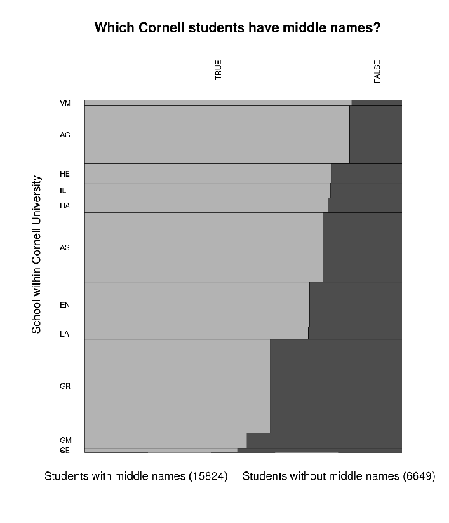
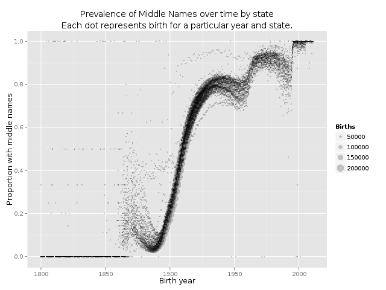

New Orleans Wetlands
Applications get posted to a website.

Bragging about projects
Thoughts
The Gulf Restoration Network on wetlands
The [Gulf Restoration Network] works to protect wetlands from reckless development, destructive logging practices, and harmful U.S. Army Corps of Engineers projects and policies.
More specifically
Applications get posted to a website.
Applications look like this.

How the Gulf Restoration Network uses these

In the past, Scott has had to do this manually. But he doesn't really have time for that.
We're using a computer program to make the first two of these steps easier.
My script extracts this information.

It also
We're still working out the kinks, but the initial goal is that Scott will be able to use the spreadsheet to quickly find notices that he should look into further. Then he'll read the notice and take whatever actions make sense.
MIX delivers data services, analysis, research and business information on the institutions that provide financial services to the world’s poor.
In school, I studied how people use computers and toilets (not at the same time)
Scripts for
Sample for a questionnaire
While selecting the sample for that toilet study, I started wondering how many people have middle names.
I asked the US Census.
Subject --------------------------------------------------------------- What proportion of people have middle initials? Discussion Thread --------------------------------------------------------------- Response Via Email(CLMSO - EMM) - 03/14/2011 16:04 Thank you for using the US Census Bureau's Question and Answer Center. Un- fortunately, the subject you asked about is not one for which the Census Bureau collects data. We are sorry we were not able to assist you.(http://blog.scraperwiki.com/2012/06/15/middle-names-in-the-united-states-over-time/)
The Census couldn't tell me, so I looked at that university database
Two-thirds had middle names.
A few months ago, I looked at this again with all dead Americans
We're making a platform to make data projects easier for you.
Find something that annoys you and for which no good tools exist.
Try making something to make the thing less annoying.
If that's still too hard, do something else to make the thing less annoying.
/
#